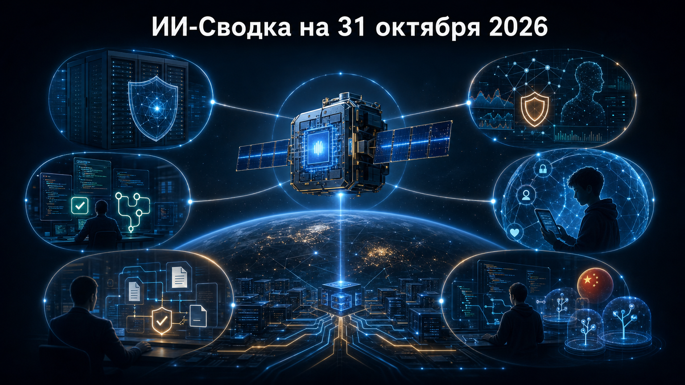

Повестка конца октября показывает, что ИИ-рынок развивается одновременно в трёх контурах: вычислительная инфраструктура ищет новые физические площадки, корпоративные агенты претендуют на выполнение внутренних процессов, а поставщики усиливают контроль доступа и поведение моделей.
Практический вывод для команд: автономность становится полезнее только вместе с изоляцией окружений, понятными политиками инструментов и проверяемым контекстом действий. Это заметно и в новых релизах coding-агентов, и в инициативах по защите инфраструктуры.
В релизе OpenCode v2.2.3 появился встроенный провайдер Claude Agent. Пользователь может пройти авторизацию в Claude Code и затем подключить её в OpenCode через команду /connect, используя уже существующий вход и доступные модели.
Одновременно релиз меняет корпоративную модель контроля: политика integration.use теперь относится только к учётным записям интеграций, а для MCP-серверов, skills и plugins введены отдельные действия. Для команд это важная миграция конфигураций: доступ агента к внешним инструментам становится более гранулярным, но обновление содержит breaking change для TUI-плагинов. Подробнее — в release notes OpenCode.
Прототип Google Suncatcher вышел на связь с Землёй и, по данным TechCrunch, выполнил первые inference-задачи на предзагруженной Gemma 4. На спутнике установлены четыре TPU, однако одновременно может использоваться один ускоритель.
Эксперимент должен проверить работу вычислительной аппаратуры при радиационных и тепловых нагрузках на орбите. Это пока не орбитальный дата-центр в коммерческом смысле, а ранняя проверка инженерной гипотезы; тем не менее проект переводит идею космических ИИ-вычислений из архитектурных расчётов в режим практических испытаний. Детали — в материале TechCrunch.
Serval объявила Series C на $150 млн при оценке $3 млрд; раунд возглавила Sequoia. Компания развивает агентов для поддержки сотрудников в IT, HR, финансах, безопасности и юридических функциях и позиционирует продукт как альтернативу части традиционных workflow-платформ.
Смысл сделки не столько в размере раунда, сколько в инвестиционной ставке на агентов как на слой исполнения внутренних процессов, а не только интерфейс для ответов на вопросы. При этом показатели внедрения и финансовый эффект для клиентов в доступном материале в основном приведены со слов компании, поэтому заявления о вытеснении крупных платформ следует воспринимать как рыночное позиционирование. Условия раунда описаны в публикации The Next Web.
NVIDIA и Eclypsium сообщили о совместной работе над защитой инфраструктуры для облачных и агентных ИИ-нагрузок. В центре инициативы — сочетание NVIDIA BlueField и средств проверки целостности инфраструктуры Eclypsium.
Практическая важность такого подхода в том, что безопасность агентного ИИ нельзя свести к фильтрации запросов к модели: риски возникают также на уровне серверов, сетей, прошивок и цепочек поставки. Публикация является продуктовым сообщением партнёров и не содержит независимой оценки эффективности решения. О заявленной интеграции — в блоге NVIDIA.
OpenAI выпустила новую публикацию под названием «How we detect frontier model misalignment», посвящённую обнаружению нежелательного поведения наиболее мощных моделей. Сам факт отдельного материала важен на фоне октябрьской серии дискуссий о мониторинге действий автономных систем и проверке их поведения до развёртывания.
В проверенном пуле не приведены технические параметры, результаты бенчмарков или новые численные пороги, поэтому публикацию нельзя трактовать как подтверждение нового стандарта отрасли. Однако она показывает, что наблюдаемость misalignment остаётся самостоятельным направлением продуктовой и исследовательской работы OpenAI. Исходная публикация доступна на сайте OpenAI.
OpenAI опубликовала Community Safety Report и анонсировала новые меры защиты подростков. Это продолжает линию компании на выделение возрастных механизмов безопасности в отдельный контур потребительского продукта.
Для рынка это сигнал, что безопасность несовершеннолетних становится не только вопросом общих правил модерации, но и самостоятельной продуктовой категорией с отдельными настройками и отчётностью. Проверенный материал не раскрывает полный состав новых функций и метрик их работы, поэтому оценивать фактическую эффективность пока рано. Позиция компании изложена в публикации OpenAI.
Alibaba Qwen выпустила Qwen Code v0.26.4. Обновление добавляет ограничение числа раундов для takeover в CI-autofix, повторный запуск verify-pr после обновления изменений и публикацию отчётов верификации с версиями модели, CLI и skill.
Для managed sessions появились независимые worktrees. В сочетании с повторной проверкой pull request это делает автономную автоматизацию менее похожей на единичный запуск агента и ближе к управляемому циклу «изменение — проверка — исправление». Релиз продолжает ранее освещавшуюся линию Qwen Code, но добавляет новые механизмы изоляции и аудита. Изменения перечислены в release notes Qwen Code.